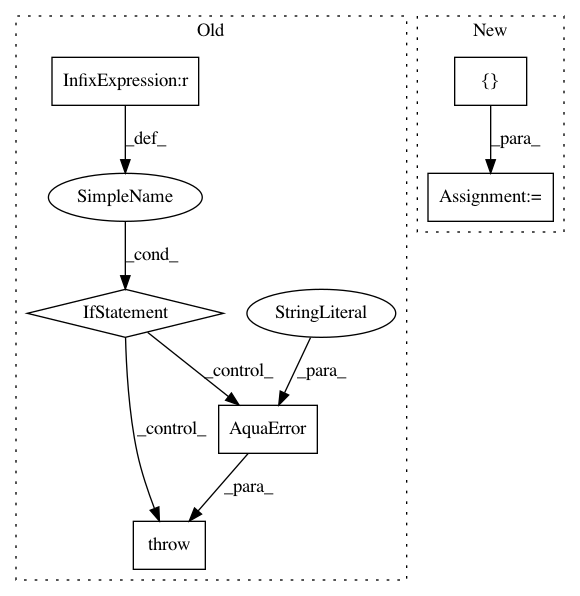

d154be3a085fc40bb8540ddf285a8adfc90aa868,test/test_bernsteinvazirani.py,TestBernsteinVazirani,test_bernsteinvazirani,#TestBernsteinVazirani#Any#,35
Before Change
])
def test_bernsteinvazirani(self, bv_input):
nbits = math.log(len(bv_input), 2)
if math.ceil(nbits) != math.floor(nbits):
raise AquaError("Input not the right length")
nbits = int(nbits)
// compute the ground-truth classically
parameter = ""
After Change
bit = bv_input[2 ** i]
parameter += bit
for optimization_mode in [None, "simple"]:
backend = get_aer_backend("qasm_simulator")
oracle = TruthTableOracle(bv_input, optimization_mode=optimization_mode)
algorithm = BernsteinVazirani(oracle)
result = algorithm.run(backend)
// print(result["circuit"].draw(line_length=10000))
self.assertEqual(result["result"], parameter)
if __name__ == "__main__":
unittest.main()
In pattern: SUPERPATTERN
Frequency: 3
Non-data size: 6
Instances
Project Name: Qiskit/qiskit-aqua
Commit Name: d154be3a085fc40bb8540ddf285a8adfc90aa868
Time: 2019-02-15
Author: shaohan.hu@ibm.com
File Name: test/test_bernsteinvazirani.py
Class Name: TestBernsteinVazirani
Method Name: test_bernsteinvazirani
Project Name: Qiskit/qiskit-aqua
Commit Name: 702f8e1c68297c9ce2e8ea497cf098df67e01a49
Time: 2020-03-20
Author: chunfuchen@users.noreply.github.com
File Name: qiskit/aqua/utils/measurement_error_mitigation.py
Class Name:
Method Name: get_measured_qubits_from_qobj
Project Name: Qiskit/qiskit-aqua
Commit Name: 702f8e1c68297c9ce2e8ea497cf098df67e01a49
Time: 2020-03-20
Author: chunfuchen@users.noreply.github.com
File Name: qiskit/aqua/utils/measurement_error_mitigation.py
Class Name:
Method Name: get_measured_qubits